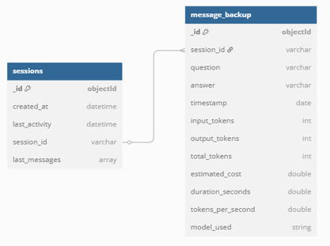
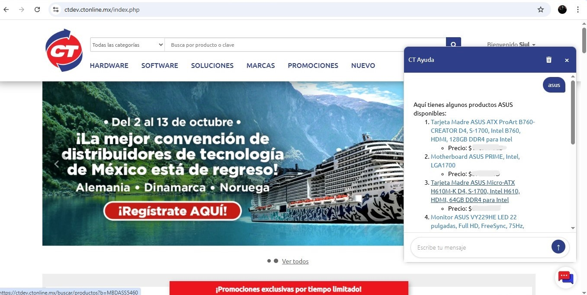
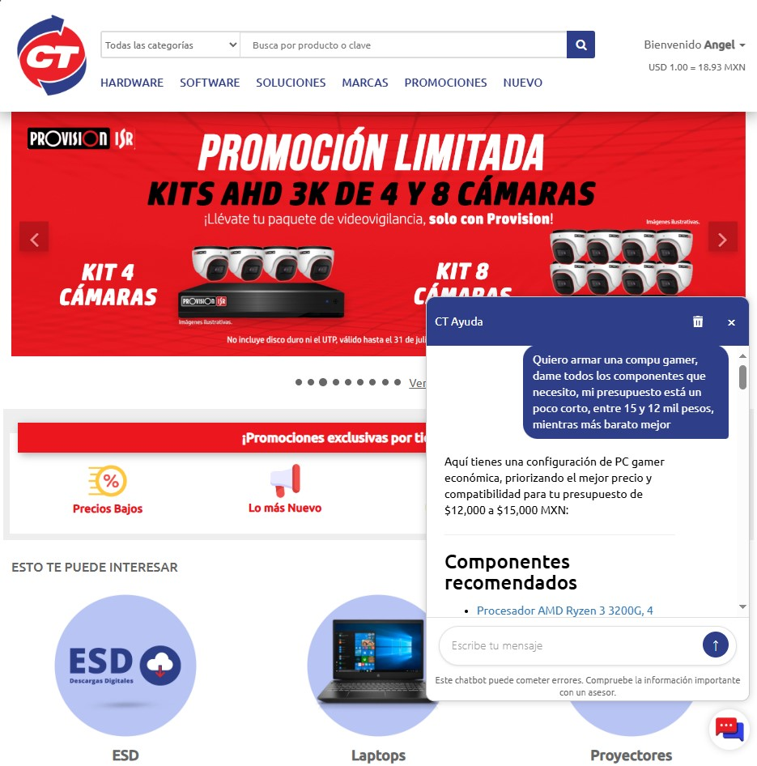

Despliegue
1 Revisión del proceso
El desarrollo del proyecto de Chatbot siguió un enfoque iterativo, basado en los principios del ciclo CRISP-DM. Esta metodología estructurada permitió abordar las distintas fases del proyecto de manera organizada, con un énfasis continuo en la mejora del diseño, la calidad del código y, fundamentalmente, el rendimiento del sistema en sus componentes clave.
Los principales retos se concentraron en la fase de extracción, manipulación y estructuración de los datos, con el objetivo de mantenerlos lo más tidy posible y así garantizar una mayor precisión y coherencia en las respuestas generadas por el sistema. Además de las condiciones bajo las promociones y el dinamismo de los precios tanto para productos normales como ofertas.
A lo largo de los ciclos de desarrollo, se han cumplido los hitos establecidos, manteniendo un ritmo de trabajo adecuado; aunque hubieron varios cambios, o ajustes, con respecto a la propuesta inicial mencionada en la comprensión del negocio, el objetivo sigue siendo el mismo:
Optimizar el proceso de recomendación de productos dentro de la empresa mediante el uso de inteligencia artificial, mejorando la precisión y eficiencia en la búsqueda de opciones alineadas con las necesidades de los clientes.
La fase de evaluación, aunque continua, ha mostrado resultados prometedores que sugieren que el sistema, en su estado actual, posee la robustez necesaria para avanzar a una etapa de prueba en un entorno controlado y, aunque sea de pruebas, real.
1.1 Determinar próximos pasos
Considerando los avances y los aprendizajes obtenidos, se evaluaron dos opciones principales para la continuación del proyecto:
- Continuar en fases de desarrollo/modelado: Dedicar más tiempo a la refinación interna de los datos, explorar técnicas avanzadas de preprocesamiento, o actualizar versiones de modelos y librerías principales.
- Pasar a la fase de implementación en un entorno de prueba: Desplegar el sistema en un entorno controlado que simule las condiciones de uso real, permitiendo obtener feedback directo y validar el comportamiento del chatbot en interacción con usuarios y la infraestructura existente.
1.2 Decisión
Se ha decidido priorizar la implementación en la página de pruebas de la empresa. Esta decisión se fundamenta en la necesidad de validar el sistema en un entorno lo más cercano posible a producción, identificar rápidamente fallos en la integración, la experiencia del usuario, y orientar los ciclos de mejora futuros con base en datos de uso real. La implementación en pruebas servirá como una plataforma funcional sobre la cual se podrá continuar iterando y perfeccionando la solución de manera incremental.
2 Plan de implementación
La fase de implementación implica el despliegue de los componentes desarrollados y su integración en el entorno web de pruebas de CT Online. El objetivo es habilitar el widget de chatbot para un grupo controlado de usuarios.
2.1. Arquitectura de Despliegue y Conexión
La fase de implementación en el entorno de pruebas requiere el despliegue de la API del chatbot (desarrollada en Python con FastAPI) y la integración del widget (desarrollado en JavaScript, HTML y CSS) en la página web de pruebas de CT Online.
Un desafío técnico crucial identificado durante la planificación del despliegue fue la política de seguridad de “contenido mixto” (mixed content) impuesta por los navegadores modernos. Dado que la página de pruebas de la empresa se sirve a través de HTTPS para garantizar una conexión segura, el navegador bloquea las peticiones que el código JavaScript del widget intenta realizar a recursos o servicios que no son seguros, como la API FastAPI que opera con el protocolo HTTP. Realizar llamadas directas desde HTTPS a HTTP resulta en un error de “mixed content”, impidiendo la comunicación.
También se evaluó la posibilidad de servir la API directamente a través de HTTPS. Sin embargo, esta alternativa implicaba mayores retos técnicos y operativos, como la gestión de certificados SSL válidos que autentiquen la comunicación segura entre el servidor y los navegadores. Aunque se intentó utilizar un certificado autofirmado, los navegadores modernos no lo reconocen como confiable, lo que resultaba en el bloqueo automático de las conexiones. Además del reto técnico, esta opción implicaba complicaciones administrativas relacionadas con la obtención, configuración y renovación de certificados válidos, lo que aumentaba la complejidad del despliegue inicial.
Para superar este obstáculo y permitir la comunicación segura entre el frontend en HTTPS y la API, se ha adoptado la siguiente arquitectura de despliegue utilizando un backend proxy:
- La aplicación principal de la empresa, que opera en un entorno seguro con HTTPS, actuará como intermediaria. Dado que esta aplicación utiliza PHP, el proxy se implementará en este lenguaje.
- El widget, integrado en la página de pruebas (servida en HTTPS), no realizará llamadas directas a la API FastAPI. En su lugar, el JavaScript del widget será configurado para enviar todas sus peticiones a un nuevo endpoint específico en el backend PHP.
- El backend PHP recibirá estas peticiones entrantes del frontend (en HTTPS).
- El código PHP, realizará entonces la solicitud real a la API. La comunicación entre el backend PHP y la API no está sujeta a las restricciones de contenido mixto del navegador, o sea, sin importa si la API se sirve en HTTP o HTTPS, el PHP siempre se puede comunicar con el servicio sin problema.
- El backend PHP recibirá la respuesta de la API y la reenviará de vuelta al frontend del widget (en HTTPS), en otras palabras, se apunta así mismo.
Este enfoque de proxy en el backend PHP resuelve el problema del contenido mixto al asegurar que la comunicación entre el navegador (frontend) y la infraestructura del backend de la empresa siempre se realice a través de HTTPS. El desafío de integrar una fuente HTTP en un entorno HTTPS queda encapsulado en la comunicación de servidor a servidor.
2.2 Gestión de Persistencia de Datos con MongoDB
Una mejora significativa en la arquitectura del chatbot ha sido la migración de la gestión del historial de conversaciones desde archivos JSON locales a una base de datos NoSQL, específicamente MongoDB. Esta decisión se tomó para optimizar el almacenamiento, mejorar el rendimiento y facilitar el análisis de datos, especialmente considerando el volumen y la frecuencia de las interacciones de los usuarios.
La implementación en MongoDB se estructura en dos colecciones principales:
sessions: Esta colección está diseñada para mantener los últimosnmensajes de cada sesión de usuario. Su objetivo es asegurar una recuperación de mensajes mínima y rápida, optimizando la experiencia del usuario final al evitar la carga de historiales extensos en cada interacción. Cada vez que se añade un nuevo mensaje, el más antiguo se desplaza si se supera el límite de mensajes configurado, manteniendo la colección ligera y eficiente para las operaciones del chatbot.message_backup: A diferencia desessions, esta colección actúa como un histórico completo de todos los mensajes generados. Su propósito principal es el análisis de datos y la alimentación de sistemas de reportes automatizados. El esquema de esta colección está pensado para simular una tabla SQL, lo que facilita la búsqueda y recuperación de información para análisis posteriores. Cada documento en esta colección incluye tanto la consulta del usuario como la respuesta del chatbot, junto con metadatos relevantes como timestamps y detalles de tokens utilizados.
Esta estrategia de persistencia de datos en MongoDB ha permitido superar las limitaciones de los archivos JSON, que no eran escalables para una gran cantidad de usuarios, ofreciendo un camino más robusto y óptimo para almacenar la información de las conversaciones.

2.3 Desarrollo del widget frontend
Se desarrolló un widget de chat personalizado e integrable mediante un simple script (sdk.js). Este widget se encarga de inyectar la interfaz de usuario (html) y cargar la lógica de la aplicación (app.js) y los estilos (styles.css) de forma dinámica en cualquier página web.
2.4 Plan de monitoreo
Durante la fase de pruebas, se implementará un plan de monitoreo para evaluar el rendimiento y comportamiento del sistema. Las métricas clave a seguir incluirán:
- Tiempo de respuesta de la API: Latencia entre el envío de una consulta y la recepción de la primera parte o la respuesta completa.
- Tasa de éxito/Error de las peticiones a la API: Proporción de peticiones que resultan en códigos de estado.
- Calidad de las respuestas: Evaluación manual o semi-automatizada de la coherencia, relevancia y precisión de las respuestas del chatbot, especialmente en casos donde no se encuentran recomendaciones.
- Frecuencia de uso del widget: Número de aperturas del chat y cantidad de interacciones por usuario.
- Errores en la consola del navegador: Monitoreo de errores de JavaScript o CSS reportados por los usuarios durante el uso del widget.
2.5 Plan de mantenimiento
Se establecerá un plan de mantenimiento periódico para asegurar la estabilidad y el buen funcionamiento del sistema desplegado:
- Actualización de dependencias: Programar revisiones y actualizaciones de las librerías y paquetes utilizados en la API (Python, Langchain, FastAPI, etc.) y potencialmente en el frontend si se usan librerías externas.
- Revisión de logs: Monitorear activamente los logs del servidor donde corre la API y de los servicios web para identificar y solucionar errores.
- Auditoría de calidad de datos y respuestas: Realizar evaluaciones regulares de la calidad de los datos de origen y verificar la calidad de las respuestas generadas por el modelo con el tiempo.
- Refactorización y optimización: A medida que se identifiquen áreas de mejora o cambien los requisitos, planificar tareas de refactorización de código para mejorar la modularidad, el rendimiento o la mantenibilidad.
2.6 Experiencia de desarrollo
El proyecto ha permitido consolidar la experiencia en el ciclo completo de desarrollo de una aplicación basada en modelos de lenguaje, desde la comprensión y preparación de datos complejos, pasando por el prototipado con herramientas como Langchain, hasta el desarrollo de una API robusta con FastAPI y la implementación de una interfaz de usuario dinámica y reusable (widget frontend desarrollado en JS, HTML y CSS). La resolución de desafíos específicos como el manejo de diferentes estructuras de datos para las vector stores y la integración segura de una API a un entorno web real (HTTPS/contenido mixto, CORS, permisos de red) han sido aprendizajes clave con complicaciones y problemas que se pudieron corregir y solucionar. Se han seguido buenas prácticas de desarrollo, enfocándose en la modularidad para facilitar futuras expansiones (ej: integración de LangGraph) y el mantenimiento del código.
2.7 Despliegue del chatbot en el sistema de desarrollo
El chatbot fue desplegado exitosamente en el entorno de pruebas de CT Online, habilitado específicamente para fines de desarrollo e integración continua. Este entorno permite validar en condiciones casi reales el comportamiento tanto del frontend (widget) como de la API conversacional.
El proceso de despliegue consistió en los siguientes pasos:
- Montaje del entorno de la API: La API desarrollada con FastAPI se desplegó en un servidor, o ambiente virtual de linux, utilizando Gunicorn como servidor de aplicaciones y conectándose al backend de la página de CT Online.
- Integración del widget en la página de pruebas: Se inyectó el script del widget directamente en la página, asegurando que se pudieran cargar dinámicamente los recursos necesarios (
JS,HTMLyCSS) desde un servidor de archivos estáticos. La integración se validó en distintos navegadores modernos para asegurar la compatibilidad y el correcto funcionamiento. - Gestión de versiones y control de cambios: Se utilizó Git para gestionar versiones del código tanto del sistema del Chatbot, la API y del widget. Esto permitió llevar un registro detallado de los cambios realizados y facilitó el proceso de despliegue incremental, en caso de futuras modificaciones o ajustes.
- Verificación funcional: Tras el despliegue inicial, se realizaron pruebas manuales y automatizadas para verificar el correcto funcionamiento del flujo de conversación, el tiempo de respuesta de la API y el comportamiento del widget en diferentes escenarios (errores, entradas no reconocidas, ausencia de resultados, etc.).
- Consideraciones de seguridad: Aunque se trata de un entorno de pruebas, se aseguraron medidas básicas como la validación de origen en CORS, limitación de rutas expuestas en la API, y uso de HTTPS para todas las comunicaciones entre cliente y servidor.
La imagen a continuación muestra el chatbot funcionando en su entorno de desarrollo, con el widget incrustado en la página de pruebas de CT Online:

Este hito marca un avance significativo hacia la validación en entorno real del sistema conversacional, permitiendo recopilar feedback de usuarios internos antes de considerar un despliegue completo en producción.
2.8 Despliegue del chatbot en el sistema de producción
A partir del despliegue en el ambiente de pruebas, donde recopilamos retroalimentación e hicimos iteraciones sobre el modelo, finalmente pudimos desplegarlo al ambiente de producción. Este despliegue es escalonado, empezando por la sucursal de Hermosillo y con los vendedores de la empresa, recopilando nuevamente retroalimentación pero más pegada a casos de estudio concretos y reales.
